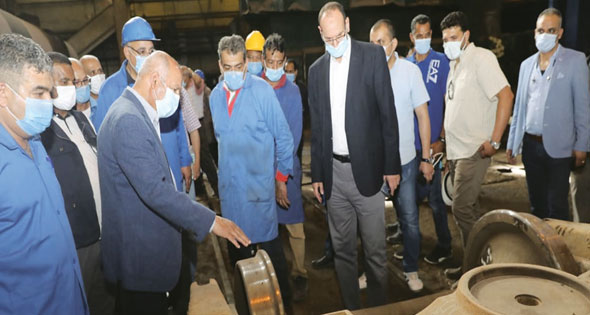

الأثنين
28 من رمضان 1442 هــ 10 مايو 2021
29℃ القاهرة, مصر
بيانات الطالب
| مصر | العالم | تكنولوجيا | رياضة | كاريكاتير |
«النقل» تعتذر للمواطنين عن تأخير المواعيد.. زيادة البضائع المنقولة بالقطارات إلى ٢٥ مليون طن سنويا

أكد وزير النقل الفريق مهندس كامل الوزير، أن هناك خطة لزيادة حجم البضائع
المنقولة بالقطارات ليصل إلى 25 مليون طن سنويا بنسبة 5%، بهدف زيادة الموارد
وتخفيف الحمولات على الطرق، وأوضح ان هيئة السكك الحديدية تعاقدت مع شركة «سيماف»
على تصنيع وتوريد اكثر من ألف و١٥٠ عربة بضائع متعددة الأغراض لنقل الأقماح والحبوب
والمواد البترولية والزيوت والحاويات والفحم والأسمنت وجميع أنواع البضائع.
جاء ذلك أمس خلال تفقد الوزير، ورش جبل الزيتون بالإسكندرية المتخصصة فى إصلاح
وعمرات عربات البضائع، ورافقه خلال الجولة رئيس وقيادات هيئة السكة الحديد، وقد
تناول وجبة الإفطار مع العمال وقائدى القطارات. وقال إنه يتم تطبيق مبدأ الثواب
والعقاب بكل حزم، وسيتم صرف الحافز لمن يستحق ولا حافز لمن لا يعمل، وأن الحوافز
ستزداد بزيادة إنتاجية الورش، وأن الأرباح ستكون للشركات الرابحة فقط، وأشار الى
وضع وتنفيذ خطة لإعادة تأهيل وتدريب وتثقيف وتوعية العنصر البشرى والارتقاء بمستواه
الفنى ووضع آلية ومعايير مختلفة لاختيار العناصر الجديدة.
ومن ناحية أخرى اعتذرت وزارة النقل للمواطنين من ركاب السكك الحديدية بسبب ما يحدث
حاليا من تأخير فى مواعيد القطارات، خاصة على الخطوط الرئيسية الجارى تطويرها وهى
"القاهرة -الإسكندرية" و "القاهرة -أسوان" و "بنها - الزقازيق" و"الإسماعيلية
-بورسعيد". و قالت الوزارة فى بيان لها أمس إن التأخير يرجع الى ما يتم حاليا من
تنفيذ مشروعات تجديد السكة وتطوير وتحديث نظم الإشارات بهذه الخطوط لزيادة معدلات
السلامة والأمان عليها ومن المخطط الانتهاء منها فى ديسمبر المقبل بنسبة ١٠٠٪ لخطوط
الإسكندرية و بورسعيد و٥٠٪ الصعيد.
كما ارجع البيان التأخير ايضا الى ارتفاع درجة الحرار ة خلال فصل الصيف الذى بدأ
بموجات شديدة الحرارة وهو ما يؤثر على سلامة القضبان ويتطلب ذلك تخفيض سرعة
القطارات على الخطوط المختلفة طبقا لقواعد الامن والسلامة.